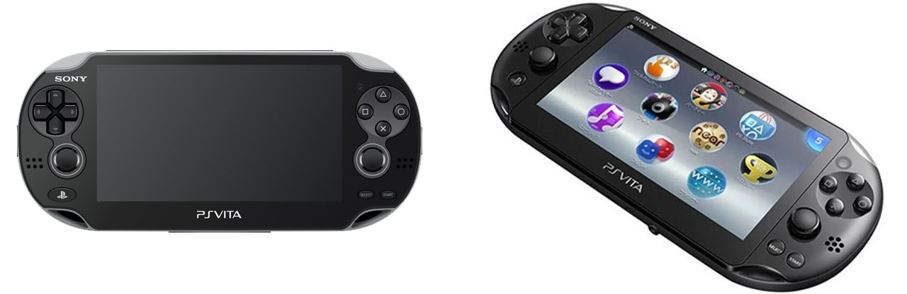
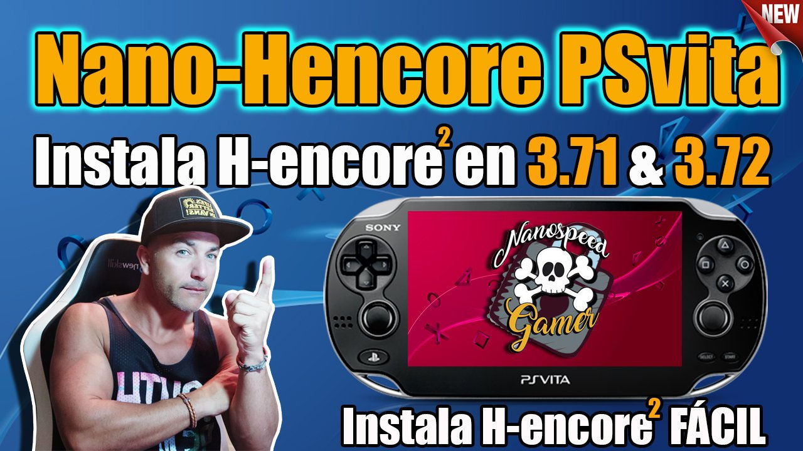
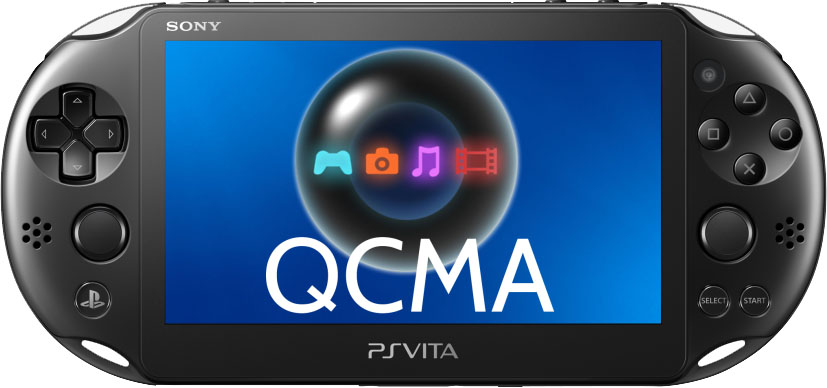
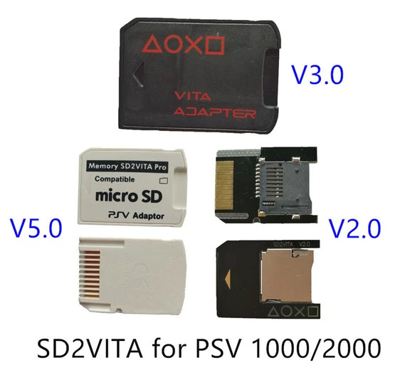
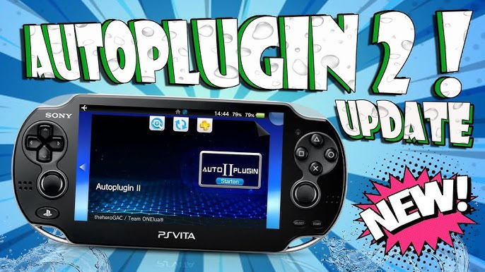
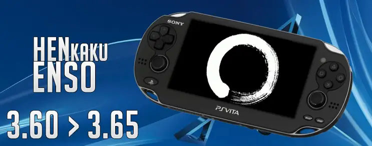
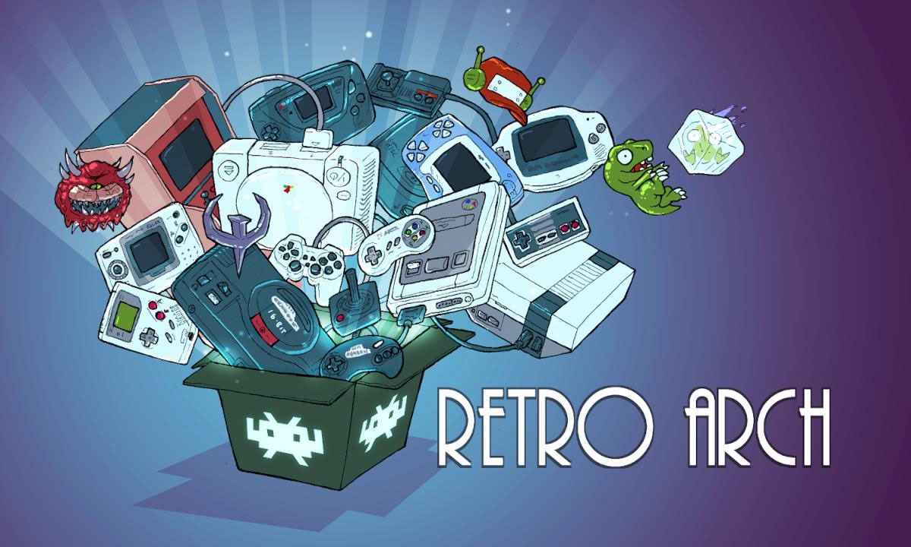
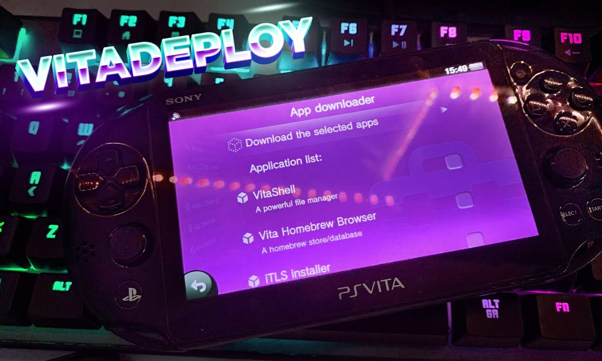
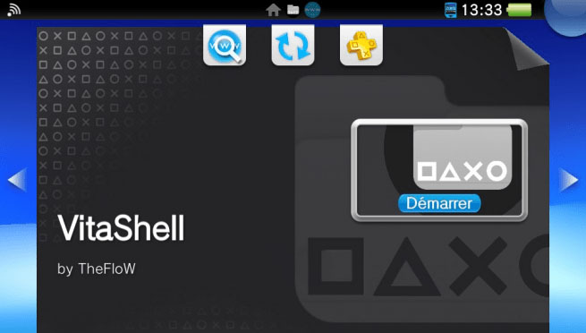

Información de PS Vita
Algunos de los aplicaciones o ayuda que mostramos a continuación son más que nada para ayudar con algunas necesidades que se presenten.
Nos puede recomendar algunos programas o aplicaciones para subir a nuestra WEB o si encuentra algún problema con algunos links o comandos le agradecemos informar para mantener esta página activa. igual todos los comandos y los link fueron actualizados el 10-07-2022.
Programas
Nano-Hencore
Instala H-encore 2 en tu psvita de forma Fácil y sencilla, con su sistema de comando nos permite desbloquiar muestra PSVita. Este programa es para sistema operativos Windows 7-8-10-11
QCMA
Brinda administración de archivos y contenido para el dispositivo PS Vita con una herramienta de código abierto que viene con las mismas características que la oficial. Incluya soporte para metadatos para archivos PSP Save Data, información de metadatos para canciones individuales (álbum, artista, título, portada) y más
Sd2vita
Los juegos de PS. Principalmente, SD2Vita es sólo un adaptador micro SD insertado en el Sony PS Vita estándar. Sin embargo, añade algo de encanto con su capacidad de ofrecer más memoria para los juegos. Gracias a los avances realizados en SD2Vita, los jugadores pueden ahora ampliar su almacenamiento de memoria externa a unos 256 GB.
Hombrew - Extenciones
Apollo Save Tool
 Apollo Save Tool es una aplicación para administrar archivos de partidas guardadas. La apollo-ps3aplicación homebrew permite descargar, desbloquear, parchear y cancelar archivos de juegos guardados directamente en tu PSVita.
Apollo Save Tool es una aplicación para administrar archivos de partidas guardadas. La apollo-ps3aplicación homebrew permite descargar, desbloquear, parchear y cancelar archivos de juegos guardados directamente en tu PSVita.
AutoPlugin2
 Autoplugin para PSVITA es una herramienta hombrew que te permite instalar o desinstalar los siguientes complementos y plugins con un solo clic (en ux0 o ur0 o ur0 para SD2VITA). Sin lugar a dudas es una aplicación que deberias tener instalada en tu consola portátil PS VITA.
enso365
Si su dispositivo con la versión de firmware 3.65 no pudo cambiar a la versión de firmware 3.60 debido a su "firmware de fábrica", afortunadamente aún podrá usar el exploit de tiempo de arranque Enso más conveniente.Desafortunadamente, es posible que experimente incompatibilidades menores de software, ya que no podrá usar ningún homebrew que solo sea compatible con 3.60
Playstation MOBILE
 PlayStation Mobile ofrece un apetecible punto de entrada al mundo de PlayStation para todos los poseedores de un smartphone PS Certified o tablet, a la vez que da a los jugadores de PS Vita la posibilidad de expandir su colección con un montón de innovadores y asequibles títulos. Todo lo que necesitas para empezar es una cuenta Sony Entertainment Network y un dispositivo compatible.
PlayStation Mobile ofrece un apetecible punto de entrada al mundo de PlayStation para todos los poseedores de un smartphone PS Certified o tablet, a la vez que da a los jugadores de PS Vita la posibilidad de expandir su colección con un montón de innovadores y asequibles títulos. Todo lo que necesitas para empezar es una cuenta Sony Entertainment Network y un dispositivo compatible.
RETROARCH
RetroArch es una interfaz para emuladores, motores de juegos y reproductores multimedia. Le permite ejecutar juegos clásicos en una amplia gama de computadoras y consolas a través de su elegante interfaz gráfica. Los ajustes también están unificados, por lo que la configuración se realiza de una vez por todas. ¡RetroArch tiene funciones avanzadas como sombreadores, netplay, rebobinado, tiempos de respuesta del siguiente cuadro, runahead, traducción automática, funciones de accesibilidad ciega y más!
VitaDeploy
La guía utiliza la aplicación VitaDeploy como método principal para instalar otras aplicaciones y un firmware personalizado. Si no instaló VitaDeploy al instalar h-encore, puede instalarlo usted mismo con molecularShell o VitaShell.Para instalar el .vpkarchivo necesario (paquete de contenido) en su dispositivo, utilizamos el Protocolo de transferencia de archivos (FTP)para copiar los archivos a la tarjeta de memoria de su dispositivo
VitaShell
VitaShell es una alternativa para PS Vita en forma de aplicación VPK que te permite reemplazar el LiveArea (menú táctil de la consola) por un gestor de archivos a la vieja usanza, pero que soporta muchísimas más opciones. Para poder instalar este homebrew es necesario tener previamente instalado HENKaku.
Extra
Rockstar
Los juegos clásicos de Rockstar para nuestra PS Vita de PlayStation 2, siempre está entre los más pedidos cuando se habla sobre juegos de la compañía que se merece una remasterización, remake o reboot que lo traiga a la nueva generación de jugadores.
Temas
 Custom Theme Manager es una aplicación hombrew muy útil y fácil de usar que te permite como su nombre lo indica, administrar completamente tus temas personalizados directamente desde la consola. El usuario puede navegar, ver, descargar e instalar Temas personalizados desde el repositorio en línea de psv.altervista.org en su PSVita directamente desde la misma aplicación., sin necesidad de utilizar el navegador de Internet, aplicaciones externas o modificaciones a la base de datos o conectar la consola a una PC.
Custom Theme Manager es una aplicación hombrew muy útil y fácil de usar que te permite como su nombre lo indica, administrar completamente tus temas personalizados directamente desde la consola. El usuario puede navegar, ver, descargar e instalar Temas personalizados desde el repositorio en línea de psv.altervista.org en su PSVita directamente desde la misma aplicación., sin necesidad de utilizar el navegador de Internet, aplicaciones externas o modificaciones a la base de datos o conectar la consola a una PC.